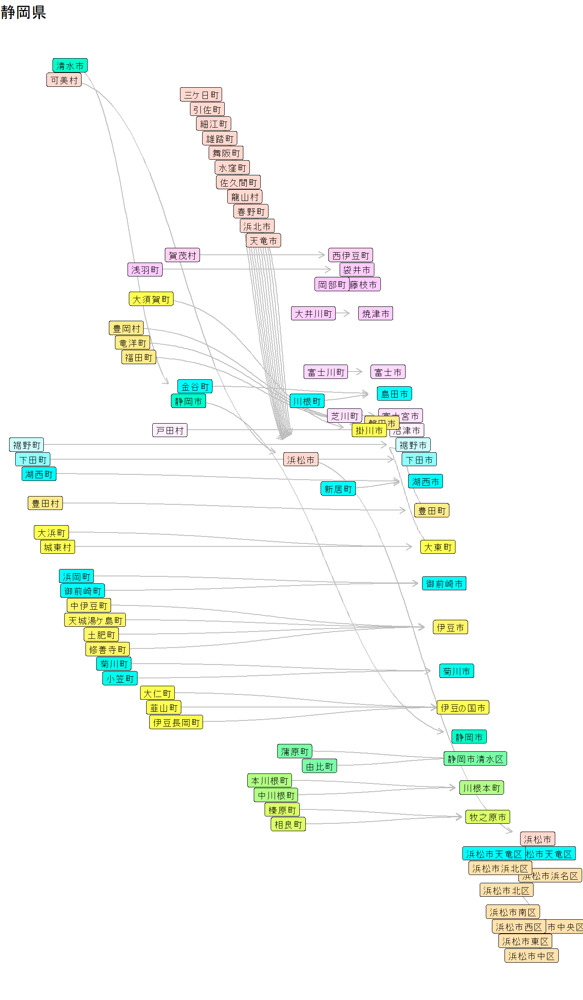
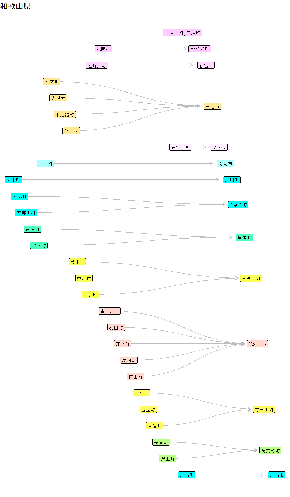

コード
library(tidyverse)
library(tidygraph)
library(ggraph)
date_end <- ymd("2024-04-01")
graph_city <- jpcity:::graph_city$graph_city |>
activate(nodes) |>
filter(!node_is_isolated(),
is.infinite(interval) | int_end(interval) <= date_end) |>
arrange(desc(interval)) |>
replace_na(list(city_desig_name = "",
city_name = "")) |>
mutate(city_name = str_c(city_desig_name, city_name)) |>
select(!city_desig_name) |>
mutate(group = group_components()) |>
activate(edges) |>
filter(!type %in% c("分離", "分割"))
jpcity::parse_pref(1:47) |>
walk(\(pref) {
pref_name <- jpcity::pref_name(pref)
plot <- graph_city |>
activate(nodes) |>
filter(pref_name == .env$pref_name) |>
create_layout("fabric") |>
# ラベル位置を時系列に合わせることも可能だが見えづらいため省略
# mutate(y = int_start(interval)) |>
ggraph() +
geom_edge_diagonal(color = "gray",
arrow = arrow(length = unit(2, 'mm')),
end_cap = circle(8, 'mm')) +
geom_node_label(aes(label = city_name,
fill = as_factor(group)),
size = 3,
show.legend = FALSE) +
scale_fill_hue(l = 100) +
coord_flip() +
labs(title = pref_name) +
theme_void()
print(plot)
})

